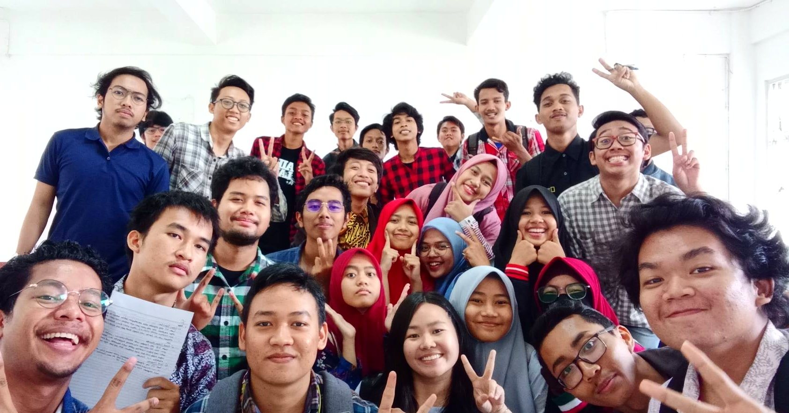
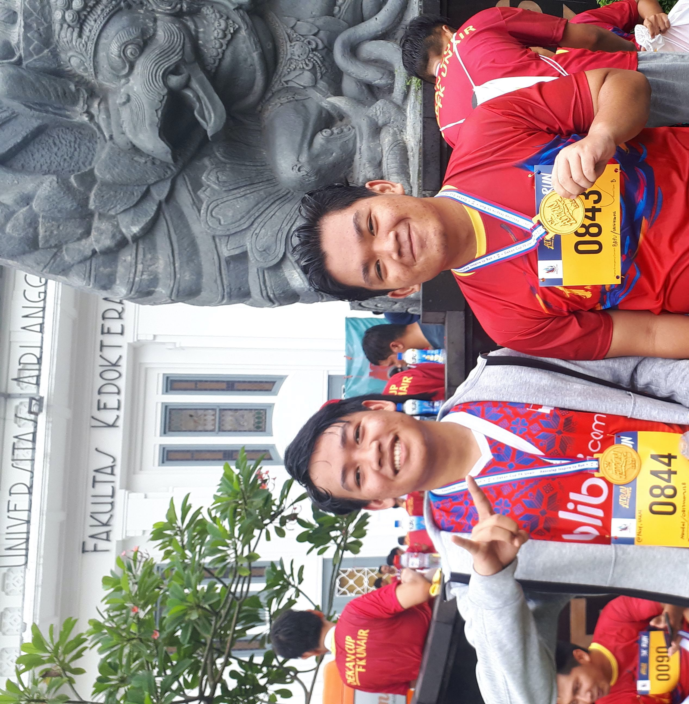
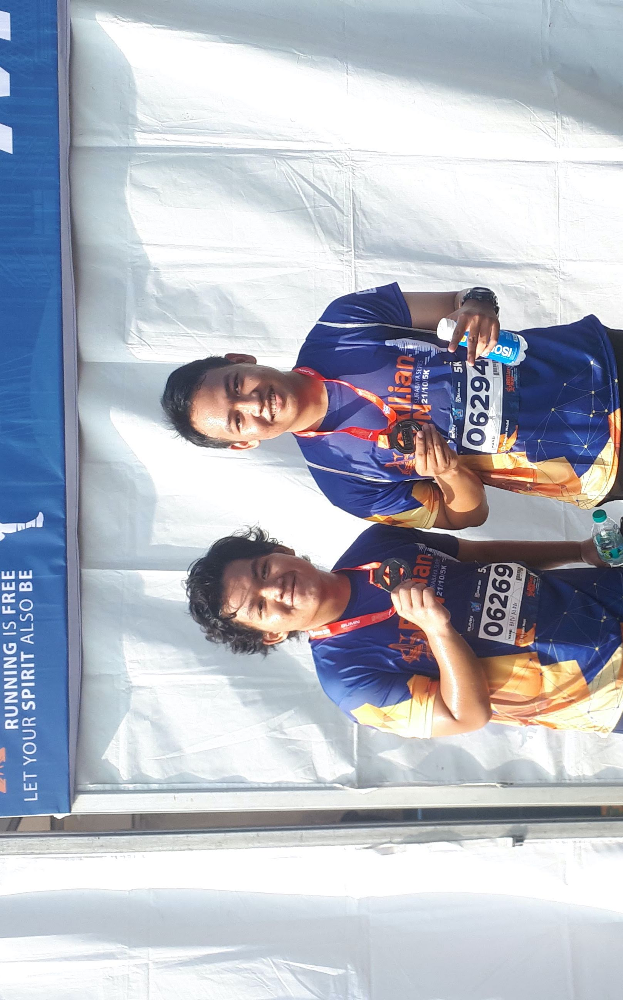
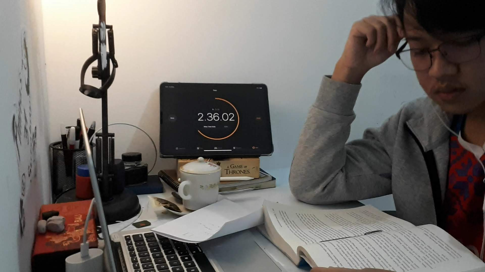
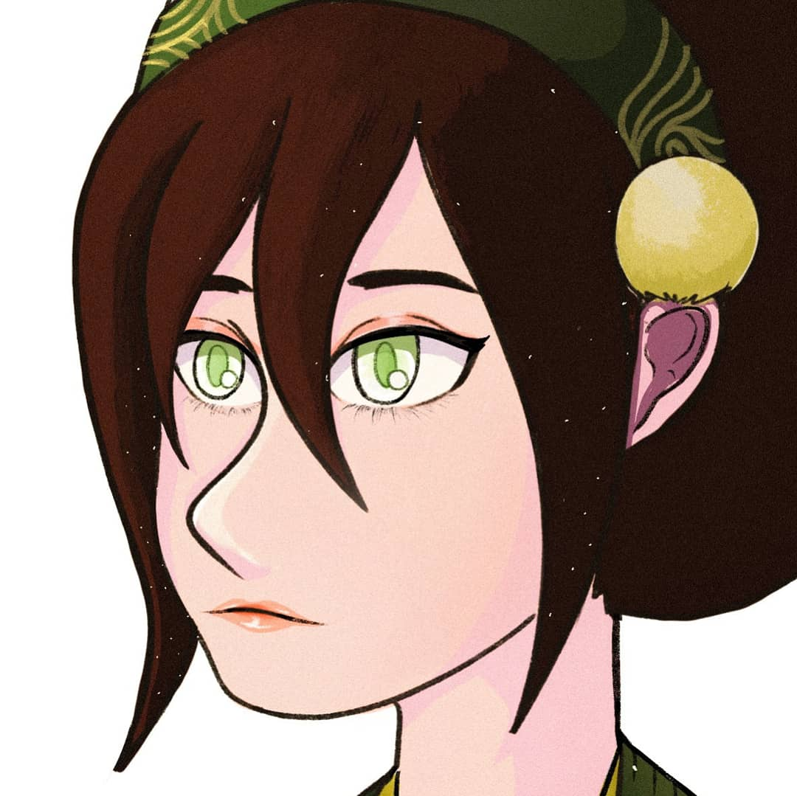
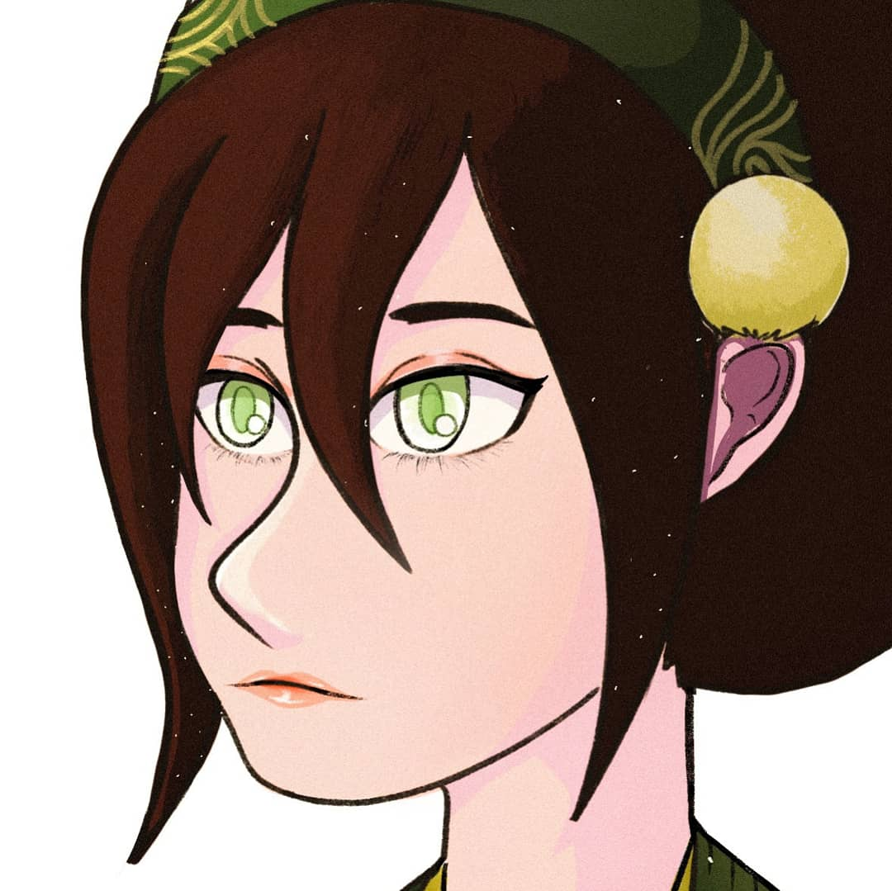
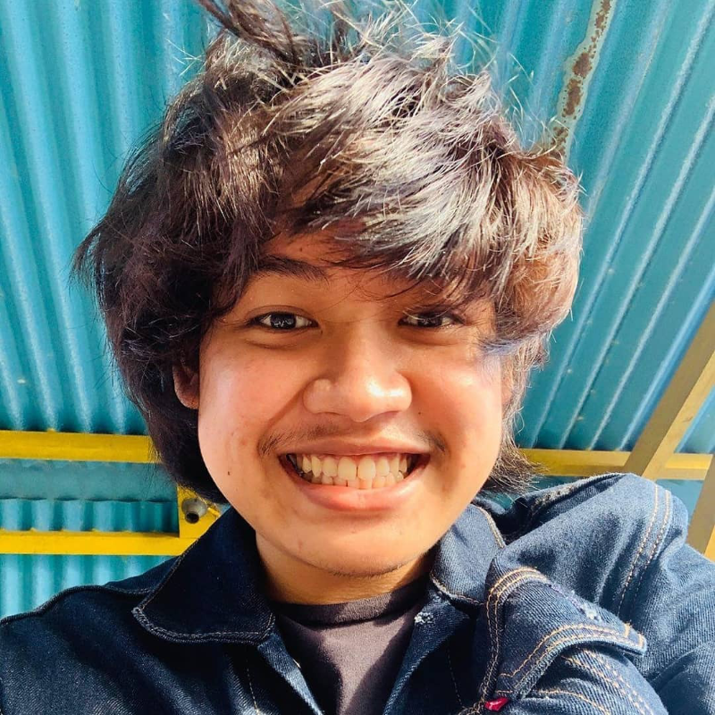

Profile Ku
Naufal S. A. Sunandar
5211940000104
about my self
i'm a student in information system departement at sepuluh nopembet institute, personaly i really interested in product manager career, but in order to persue this career, i had to know about techincal fist, so currently i'm learning about software engineering myself. meantime, i just enjoy the prosess, meeting new friends and try something new
my first year
this is my fist year of semester in here, i meet a lot of friends and a lot of nice lecture
in the departement. i got an A in this class, what an awesome day.

running
this is me and my friend bayu, we try to push our limit in running by joining competition,
we join airun running competition in medical faculty airlangga university. the day i lost my legs.
 
challanging my self reading book for 4 hours everyday
this is me trying to change my habbit of lack reading books, i have a hard time reading book
so i documented my self try to read a book for 4 hours everyday.

my hobby
i lost my sense of time everytime i sketching, i enjoy art so much and for some reason sketching
become a habbit. since then i develope my skill and becoming a digital artist as a hobby, ofcourse my main goal still
a project manager, this is just one way i'm letting my stress away.
 

Column 2

nama & nrp :
Naufal S. A. Sunandar
05211940000104
asal :
Manokwari Papua Barat.
tempat tanggal lahir :
fak-fak
27 oktober 2000
Hobi :
object oriented programing
fantasy novel
digital art